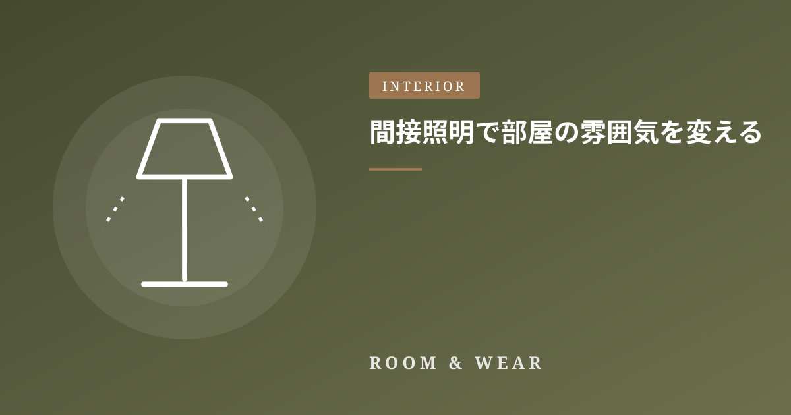

間接照明で部屋の雰囲気を変える。照明の選び方と置き場所

※この記事にはアフィリエイトリンクが含まれています（広告について）。
家具を買い替えなくても、照明を工夫するだけで部屋の雰囲気は変えられます。特に夜をくつろいで過ごしたい人には、間接照明がおすすめです。
まずは「色温度」を知る
照明の光の色は色温度（K：ケルビン）で表されます。
- 2700K前後（電球色）：オレンジがかった暖かい光。リラックスしたい寝室やリビング向き
- 4000K前後（温白色）：自然な白さ。どんな部屋にもなじみやすい
- 5000K以上（昼白色・昼光色）：白く明るい光。作業や勉強をするスペース向き
色温度を調整できるLED照明なら、時間帯に合わせて切り替えられて便利です。
間接照明を置くと効果的な場所
部屋の角
フロアライトを部屋の角に置いて壁や天井を照らすと、部屋に奥行きが出ます。
テレビやモニターの裏
テープ型のLEDライトを背面に貼ると、画面のまわりがやわらかく照らされ、映画やゲームの雰囲気が出ます。
棚やベッドの下
家具の下から床を照らすと、家具が浮いているように見えて、ホテルのような雰囲気を作れます。
選ぶときの注意点
LEDテープライトや小型ライトは、電源の取り方（USB・コンセント）や長さを事前に確認しておきましょう。また、スマートリモコンやスマートスピーカーに対応したものなら、声やアプリで操作できます。
条件別に選んだ3点
部屋の雰囲気づくりに使いやすい照明を、置き方の違いで3つ選びました。仕様は2026年11月17日にAmazonの販売ページで確認した内容です。編集部が実際に使用したレビューではありません。購入前に最新の情報をご確認ください。
| 商品 | 置き方 | 色温度の調整 | 操作方法 |
|---|---|---|---|
| SwitchBot RGBIC フロアライト | フロアライト | 電球色〜昼光色に調整可 | アプリ・音声・付属コントローラー |
| Lepro LEDテープライト テレビバックライト | テープライト | RGBカラー16色（販売ページ記載） | 付属リモコン |
| SwitchBot スマート電球 E26 | 電球を交換 | 調光・調色に対応 | アプリ・音声 |
部屋の角に置く
SwitchBot RGBIC フロアライト（ブラック）
- サイズ
- 奥行20×幅20×高さ135cm（販売ページの商品の寸法）
- 重量
- 約1.27kg
- 色温度
- 2700〜6500K（販売ページ記載）
- 接続
- Wi-Fi（2.4GHz）・Bluetooth、Matter対応と記載
- 特徴
- 縦置き・横置きの両方に対応。電球色から昼光色までの白色と、カラー照明の両方を使える。
- 向いている人
- 部屋の角に1本置いて、くつろぐ時間の雰囲気を変えたい人
- 注意点
- アプリや音声操作を使うにはWi-Fi（2.4GHz）環境が必要です。カラー演出の機能が多い分、シンプルな照明だけ欲しい人には機能が多すぎるかもしれません。
- 価格
- 価格・在庫は変動するため掲載していません（販売ページの確認日：2026年11月17日）。
テレビの裏に貼る
Lepro LEDテープライト テレビバックライト（0.5m×4本）
- 長さ
- 0.5m×4本（連結ケーブル付き）
- 給電
- USB給電（DC5V/1A）
- 対応
- 32〜65インチのテレビに適用と記載
- 操作
- RFリモコン付き
- 特徴
- テレビのUSB端子などから給電でき、背面に貼るだけで画面のまわりを照らせる。
- 向いている人
- テレビやモニターの裏をやわらかく照らしたい人
- 注意点
- 粘着テープで貼るため、はがすときに跡が残らないか、貼る場所を事前に確認してください。光の色はRGBのカラーが中心です。
- 価格
- 価格・在庫は変動するため掲載していません（販売ページの確認日：2026年11月17日）。
今の照明器具に付ける
SwitchBot スマート電球 E26（2個パック）
- 口金
- E26
- 明るさ
- 800lm・60W形相当（商品名の表記）
- 色
- 電球色・昼白色ほか、マルチカラー対応と記載
- 接続
- Wi-Fi（2.4GHzのみ）・Bluetooth
- 特徴
- 今あるスタンドやペンダントライトの電球を替えるだけで、明るさと色を調整できる。
- 向いている人
- 照明器具は買い替えずに、光の色だけ変えたい人
- 注意点
- 口金がE26の照明器具でのみ使えます。お使いの器具の口金サイズと、密閉型器具への対応可否を確認してください。
- 価格
- 価格・在庫は変動するため掲載していません（販売ページの確認日：2026年11月17日）。
まとめ
くつろぐ時間は電球色の間接照明、作業の時間は白い光、と使い分けるのが基本です。まずはフロアライトを1つ置くところから始めてみてください。
この記事に関連するアイテムを探す
Amazonの検索結果ページに移動します。条件に合う商品を比較してお選びください。
- フロアライトAmazonで商品を探す
- LEDテープライトAmazonで商品を探す
- 調色できるLED電球Amazonで商品を探す
価格・在庫・仕様は変わることがあります。購入前にAmazonの商品ページで最新の情報をご確認ください。